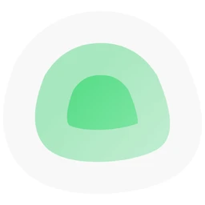

01
Surveiller un site web
Vérifie qu'une page HTTP ou HTTPS répond et consulte son historique de disponibilité.
HTTPHistorique

Repère les pannes avant tes clients avec Uptime Kuma.

Uptime Kuma vérifie régulièrement si tes sites et services répondent. Tu peux créer des alertes et des pages de statut sur ton instance auto-hébergée. Le logiciel est gratuit ; tu choisis la machine, le réseau et les sauvegardes.
Récupère le compose.yaml officiel, lance Docker Compose et garde le dossier de données sur un disque local.
La voie la plus simpleDémarre le conteneur avec un volume persistant et le port 3001 publié. Limite l'accès réseau si l'interface reste privée.
Un conteneur à lancerClone le dépôt puis utilise Node.js, Git et PM2. Le README documente Linux et Windows, mais cette voie demande plus de réglages.
Pour utilisateurs techniquesVérifie qu'une page HTTP ou HTTPS répond et consulte son historique de disponibilité.
Contrôle une adresse réseau avec TCP ou Ping pour repérer une indisponibilité.
Ajoute un contrôle de conteneur pour savoir si le service que tu héberges tourne toujours.
Relie un canal pris en charge, comme e-mail ou Discord, puis choisis les événements qui déclenchent un message.
Regroupe les contrôles utiles sur une page publique et indique l'état actuel de tes services.
Un projet très suivi, libre et lisible ; comme l'instance est chez toi, sa disponibilité dépend aussi de ta machine et de ton réseau.
La page officielle des releases publie la version 2.5.5 en septembre 2026, avec des correctifs et améliorations réguliers.
Le dépôt officiel compte environ 93 400 étoiles à la date de vérification, au-dessus du seuil annoncé dans la vidéo.
Les données résident dans le volume local de l'instance ; les alertes partent ensuite vers les services externes que tu configures.
Le logiciel est sous licence MIT et ne demande pas d'abonnement ; la machine, le réseau et la maintenance restent à ta charge.
Le projet est largement utilisé et propose des contrôles variés, mais une instance auto-hébergée ne remplace pas une sonde indépendante.
Comment on note : 5 critères notés sur 5, vérifiés sur GitHub, dans le README et les guides du projet le 9 novembre 2026. La note sur 10 est la moyenne ramenée sur 10.
Bon pour : Garder les alertes et le tableau de bord sous son contrôle
Bon pour : Démarrer sans installer de serveur et recevoir des contrôles externes
Bon pour : Réunir surveillance, page de statut et fonctions d'incident
Pour surveiller une panne de courant, de réseau ou du serveur lui-même, garde aussi une sonde externe indépendante.

Chaque vidéo RepoPop t'explique un dépôt GitHub utile en moins de 40 secondes, avec son kit comme celui-ci.